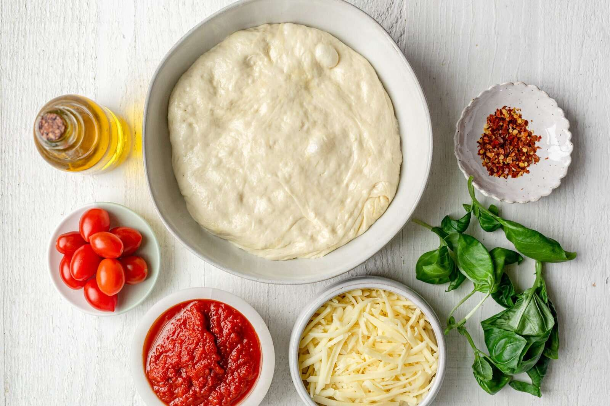
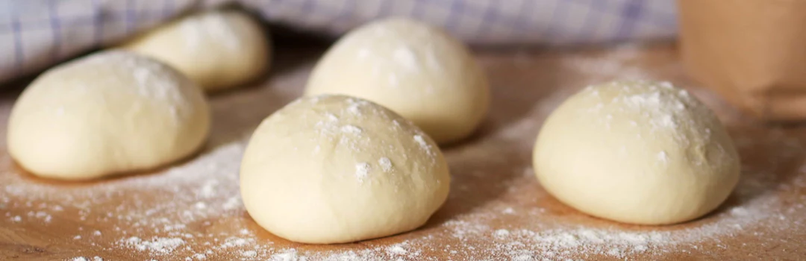
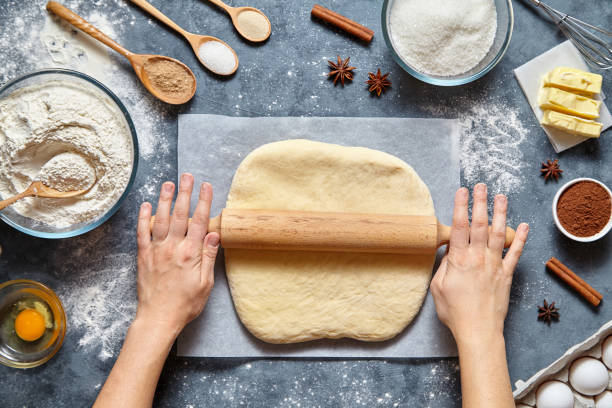
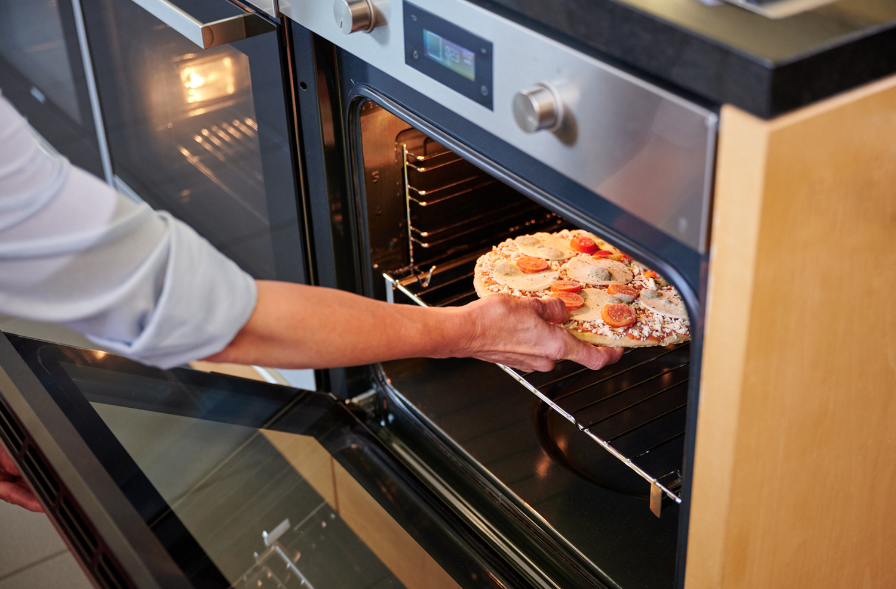
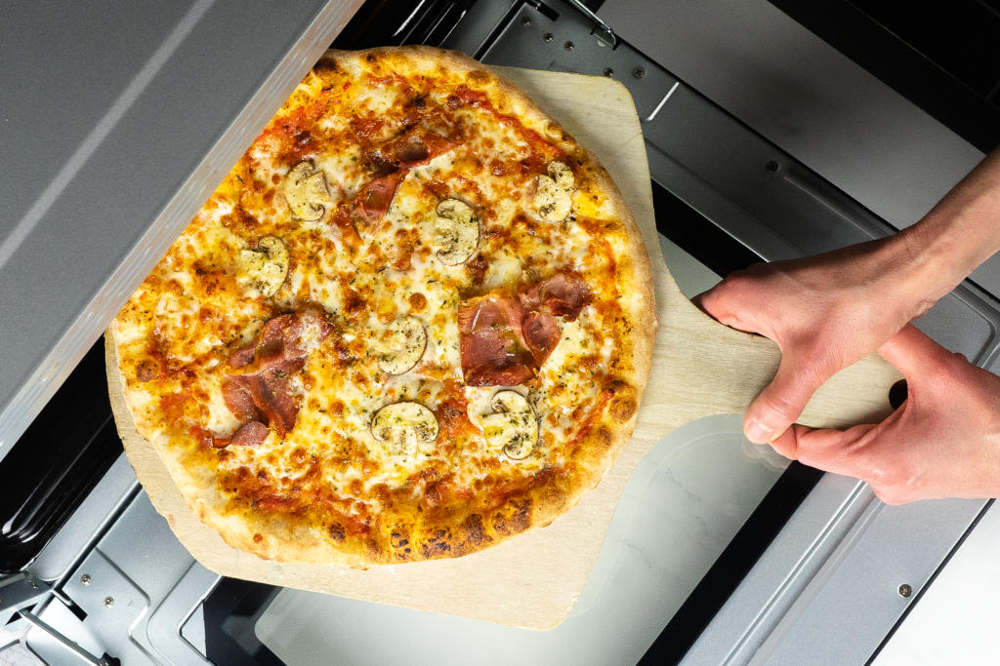
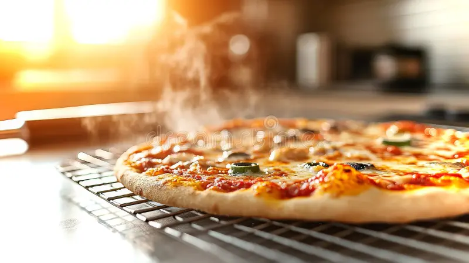

Step 1: Gather Ingredients
Collect all necessary ingredients for making pizza.
- • 550g all poupuse flour
- • 320ml of water
- • 10g salt(a pinch or so works)
- • a packet of active dry yeast
- • one tablespoon granulated sugar or honey (to activate the yeast)
tip: fresher ingredients will lead to better flavour profile (dw stuff from the pantry also works ;p).

Step 2: Combine to create Dough
Mix all ingredients together until combined and form dough balls.
- • Pour water
- • Add all previously mentioned dry ingredients
- • Mix well
tip: let the dough rest and rise at room temperature for the perfect pizza!.

Step 3: Shape the Dough
Flattening the dough ball.
- • roll out the dough
- • use your hands, gravity, or a rolling pin to stretch it
- • you may add a rim for crust depending on your preference
tip: the dough can be shaped into various shapes for a pop of whimsy (e.g. a cute heart or star).

Step 4: Baking (finally)
baking the rolled out dough.
- • preheat the oven to 245°C for about 10-15 minutes
- • place the dough on a baking sheet suitable for baking
- • ensure the baking sheet has a non stick surface or some oil/butter to prevent sticking
tip: ensure your oven is fully preheated before placing the dough inside.

Step 5: Adding your favorite toppings!
Evenly distribute your desired toppings of choice.
- • Spread an even and generous layer of sauce
- • Depending on your preference you may add various meats and vegetables (popular options include pepperoni, mushrooms, bell peppers, and olives)
- • CHEESE! (add your fav kind, even combine varieties)
tip: you could even create your own new flavor combos (experiment with toppings).

Step 6: Bake until light to medium golden
Bake the pizza until the cheese is slighly charred and the crust has evenly cooked.
- • bake on the middle rack for about 45 minutes
- • monitor the oven closely to ensure even and smooth cooking process
- • watch for the desired color or texture you're aiming for
- • rotate occassionally if required depending on various factors such as oven tempertaure and size etc
tip: switching to broil for the last few minutes to achive that crispy and caramalised look of resturant qualiy pizza (feel free to skip if not desired).

Step 7: Remove from oven
Carefully remove the pizza from the scorching hot oven and place it on a cutting board or clean surface.
- • remove the pizza carefully using oven mitts
- • let it cool for a couple of minutes (waiting is the hardest part!)
- • set a timer for the cooling period
tip: slice the pizza right before serving for the best melt and texture.

Step 8: Garnish, serve & enjoy!
Slice the pizza into even pieces and prepare garnishes.
- • preparee fresh herbs e.g basil etc or you may opt for other toppings such as chili flakes or hot honey for that extra depth of flaour to truly elevate and enchnce the flaour profile! (Optional ofc)
- • plate it up (might as well take a picture after all that hard work ^^ )
- • serve hot and enjoy immediately (dont forget to share with your loved ones)
tip: a quick drizzle of olive oil after baking adds a restaurant-quality finish.

That's all folks! :p